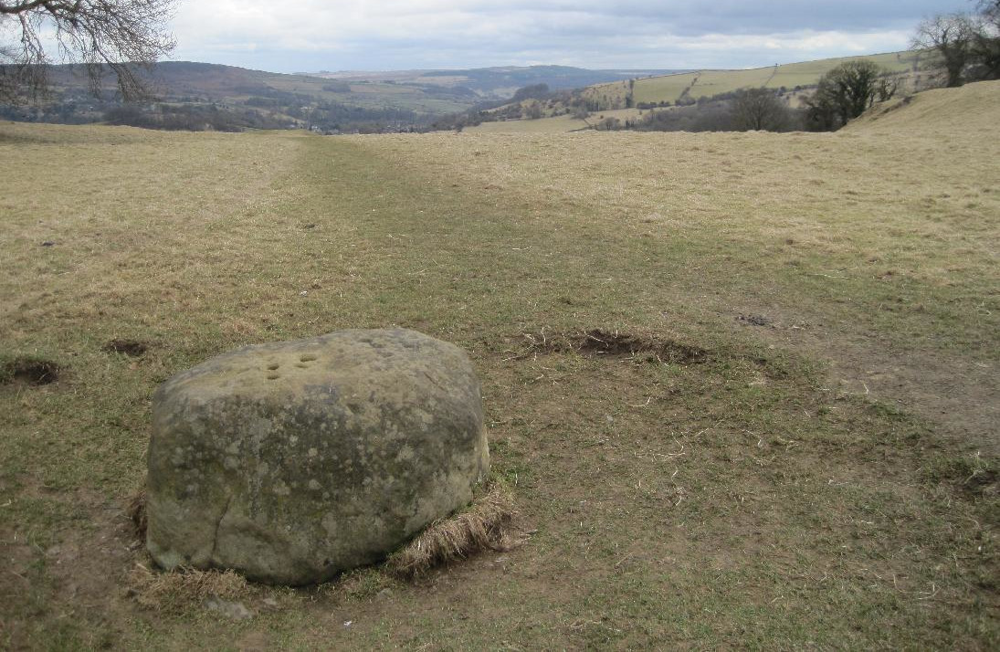

Accommodation
Where to Stay
Eyam and the surrounding Hope Valley have plenty of welcoming places to stay, from village inns to country guesthouses.

Photo by Smb1001, CC BY-SA 3.0, via Wikimedia Commons
We'd suggest booking early, as spring is a popular time in the Peak District. A few favourites to start you off:
- The Miners Arms, Eyam — a historic pub with cosy rooms, within walking distance of the hall
- The Maynard, Grindleford — a boutique hotel a short drive away, near Grindleford station
- The Rutland Arms Hotel, Bakewell — a historic coaching inn in the centre of Bakewell, for a wider choice of rooms
For more options, see the full accommodation list provided by Eyam Hall.